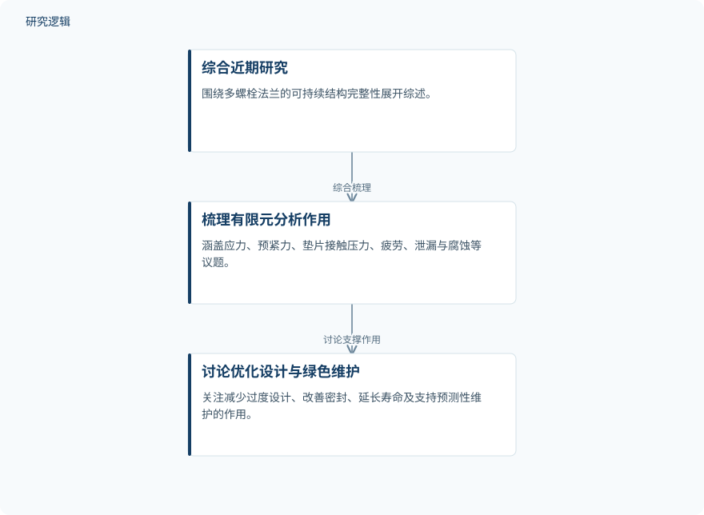

摘要解读
多螺栓法兰可持续结构完整性的有限元方法：优化设计与绿色维护策略综述
Finite Element Method for Sustainable Structural Integrity of Multi-bolted Flanges: A Review of Optimized Design and Green Maintenance Strategies
解读更新 2026-11-04 22:18 · 依据公开摘要整理，未核验全文细节
多螺栓法兰连接的泄漏与疲劳失效，不仅影响设备安全，也会带来停机、更换和材料浪费。这篇综述讨论有限元方法如何连接结构可靠性、设计优化与绿色维护，值得关注的是其对建模条件和工程应用边界的梳理。
文章目录
法兰可靠性为何也是资源效率问题
多螺栓法兰连接广泛用于管道、压力容器、海上结构、可再生能源基础设施和流程装置。其长期可靠性受到复杂机械载荷、热循环、垫片退化、腐蚀、螺栓预紧力损失及受力不均等因素影响。
这些问题可能引发泄漏、疲劳失效和非计划停机，并增加部件更换与材料浪费。因此，本文关注的不只是连接能否承载，也包括如何通过优化设计和维护，兼顾安全、寿命与资源利用。
综述如何组织有限元的应用与建模条件
本文是一篇综述，摘要明确的方法是综合近期研究，梳理有限元方法在多螺栓法兰系统中的作用，而非报告一套新开展的实验或仿真流程。讨论覆盖应力分布、螺栓预紧力、垫片接触压力、疲劳寿命、泄漏预防、腐蚀风险和结构健康监测。
在建模条件上，作者特别强调预紧力定义、接触相互作用、垫片可压缩性、摩擦行为、网格细化及服役载荷组合。这些内容构成理解模型适用性的重点，但摘要未展开具体设置与求解过程。
依据摘要整理的综述内容关系示意


概括近期研究综合、有限元应用梳理与设计维护价值之间的关系，不代表论文原图或新实验流程。
下载 SVG图示关系说明
实线表示相邻阶段的信息流，虚线表示跨阶段联系或反馈。
综合近期法兰研究 → 梳理有限元分析用途：综合应用研究；综合近期法兰研究 → 强调关键建模条件：梳理建模要点；梳理有限元分析用途 → 讨论设计与维护价值：讨论工程价值
从失效机制识别走向设计与维护支持
综述认为，有限元已显著增进对多螺栓法兰性能的理解。其讨论的关键价值，是在现场失效发生前识别关键失效机制，为减少过度设计、改善密封、延长服役寿命及支持预测性维护提供帮助。这里呈现的是综述层面的判断，而非摘要给出的定量收益。
与此同时，作者指出，有限元与自修复材料、实时自适应控制、传感器监测、机器学习验证及数字孪生维护框架的整合仍存在研究缺口。这些方向不能被解读为本文已经完成验证的系统。
仅凭摘要还不能判断哪些证据强度
摘要未说明纳入文献的数量、检索与筛选标准，也未交代各研究的试验样本、法兰类型、材料和工况覆盖范围。因此，尚不能判断综述结论对不同工程场景的代表性。
摘要也未给出统一的比较基线、预测误差、试验或现场验证范围，以及寿命、密封和资源效率的量化结果。这不等于论文没有相关分析，而是当前资料不足以判断其比较公平性与工程可迁移性。
阅读启发：先核对模型，再理解智能维护
阅读启发：进一步阅读时，可优先关注预紧力、接触与垫片行为如何被描述，以及疲劳和泄漏判断依据哪些验证证据。对于智能运维，更值得追问的是传感器信息、机器学习验证与有限元分析如何衔接，而不是把数字孪生等研究缺口直接视为成熟成果。
以上为本站阅读启发与建议，不是论文已验证的结论。